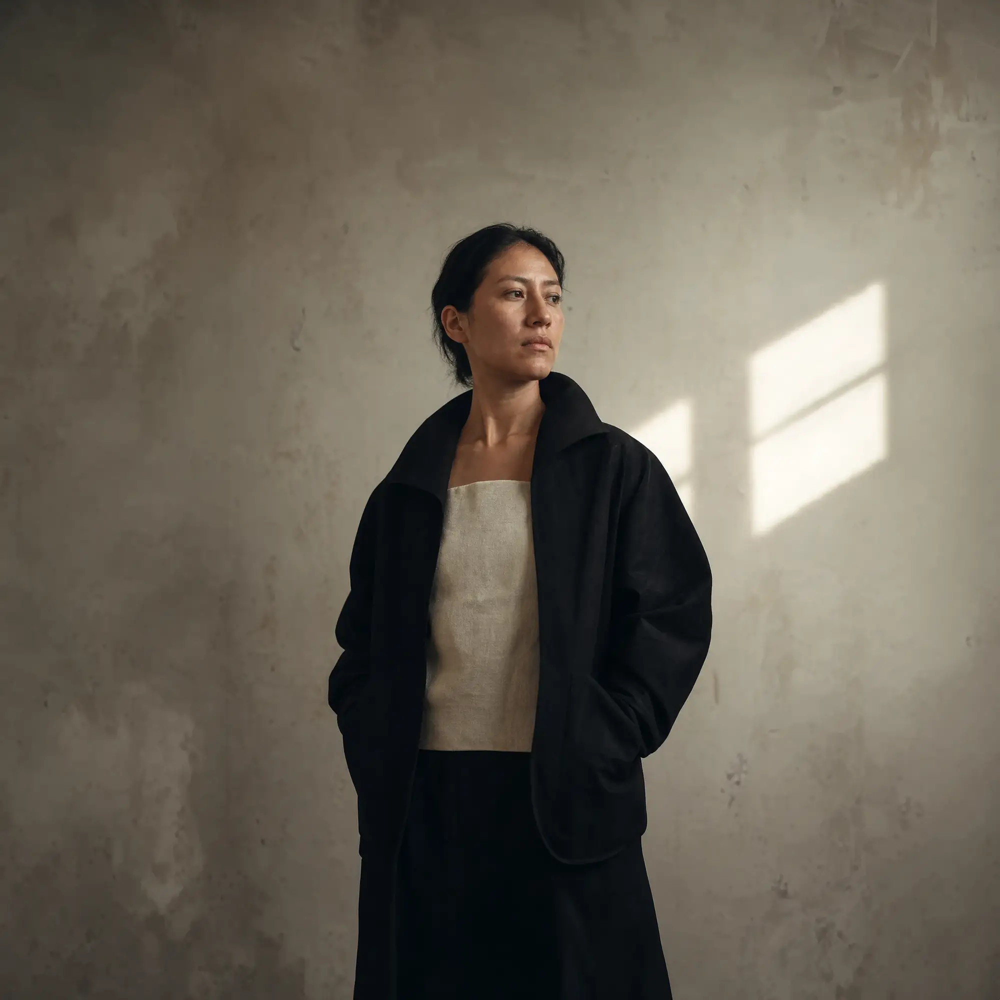
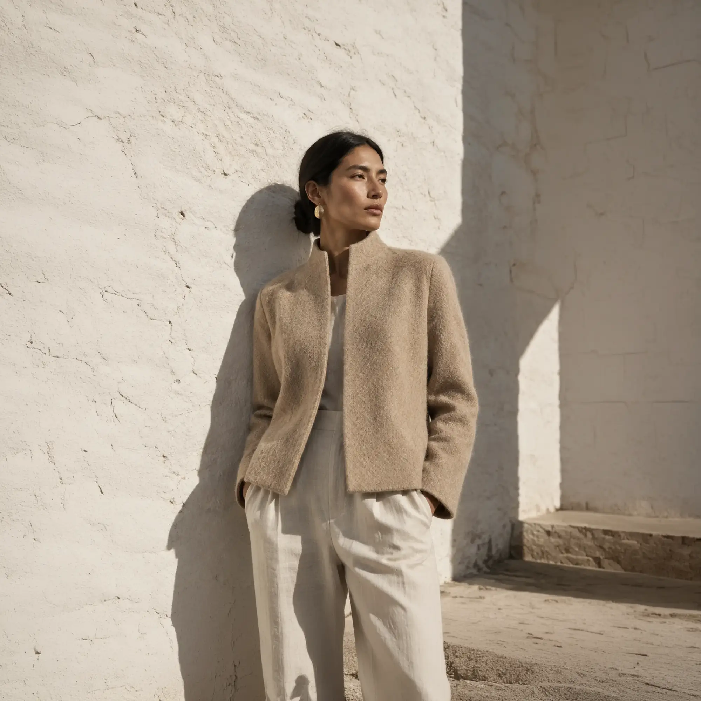
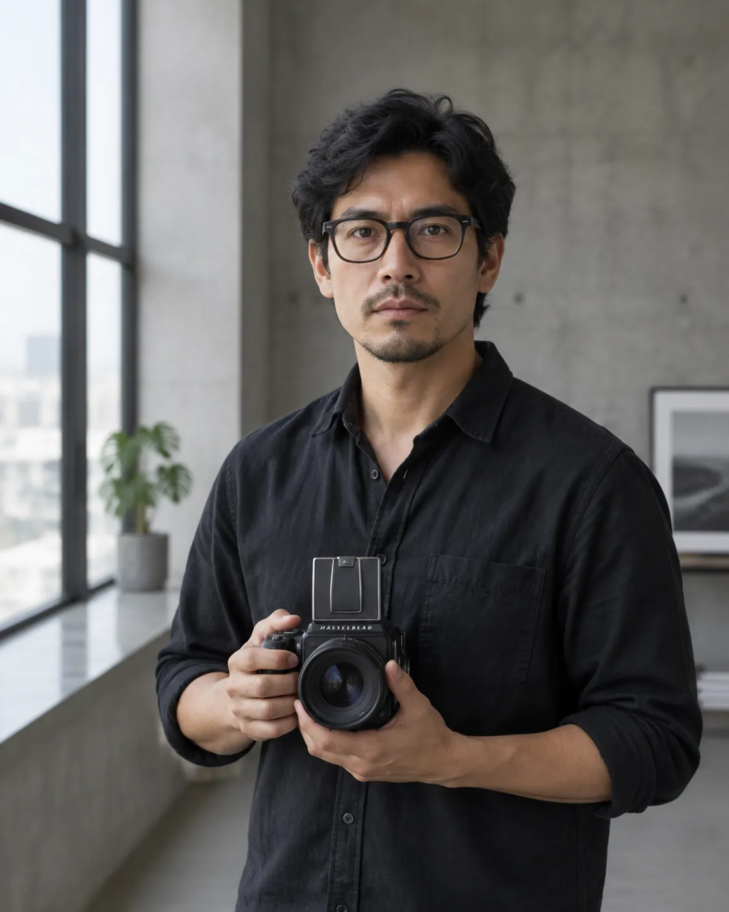

Retrato editorial
Para artistas, profesionales y equipos que necesitan una imagen personal con dirección y carácter.



Trabajo entre la observación y la dirección: primero encuentro lo que hace singular a una persona, una marca o un momento; después construyo la luz, el ritmo y el encuadre que lo vuelven visible.
Retratos, campañas y relatos visuales construidos desde una idea clara. Sin gestos prestados. Sin ruido de más.
Ver el portafolioRetrato editorial · Barranco, Lima




Una selección conceptual de retrato, celebración y materia. Todos los trabajos mostrados forman parte de esta demostración visual.
Recorrer por especialidad
Gesto real, no pose. Cobertura atenta de una celebración sin convertir el momento en una puesta en escena.
Doce retratos de una misma serie, con luz de ventana y un solo lente. La continuidad la sostiene la dirección, no el retoque.
Para artistas, profesionales y equipos que necesitan una imagen personal con dirección y carácter.
Concepto y producción de una serie visual pensada para lanzamiento, prensa, pauta y canales propios.
Fotografía consistente para moda, diseño y objetos, con una identidad que va más allá del catálogo.
Cobertura atenta de celebraciones, procesos y encuentros, sin convertir el momento en una puesta en escena.
Si la idea todavía no tiene nombre, podemos darle forma juntos y definir la producción necesaria.
Concepto, referencias, tono y secuencia definidos antes de producir. Sabemos qué buscamos sin cerrar la puerta a lo inesperado.
Cifras de demostración. En un encargo real el alcance y el precio se acuerdan antes de producir.
Comparte el contexto, la fecha y dónde vivirán las imágenes. Con esa información podemos definir una propuesta visual y el alcance de producción.
Estudio en Barranco
Lima, Perú
Lunes a viernes, 10:00 – 19:00